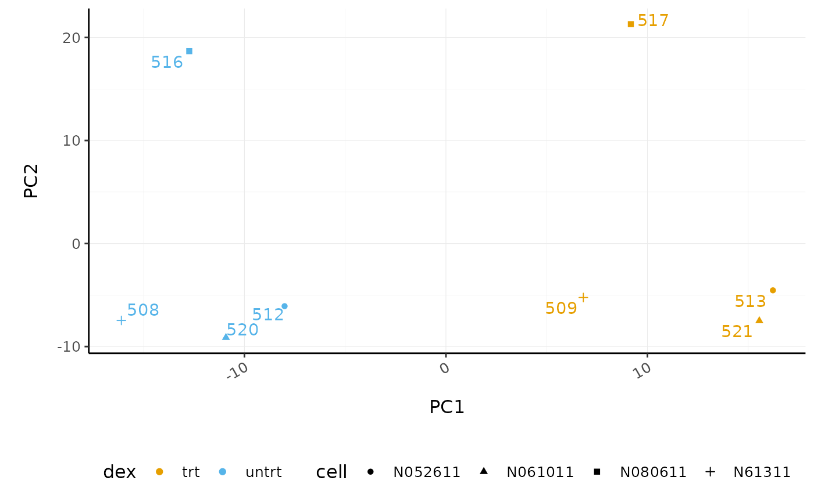
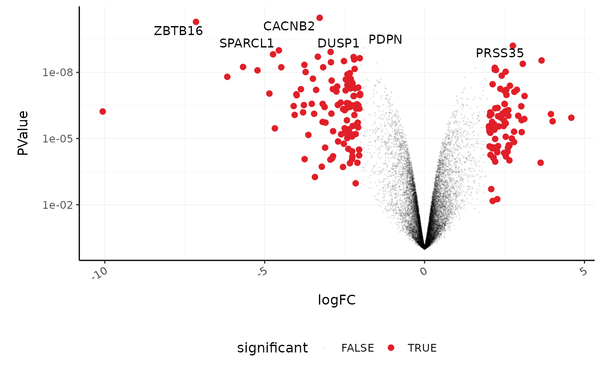
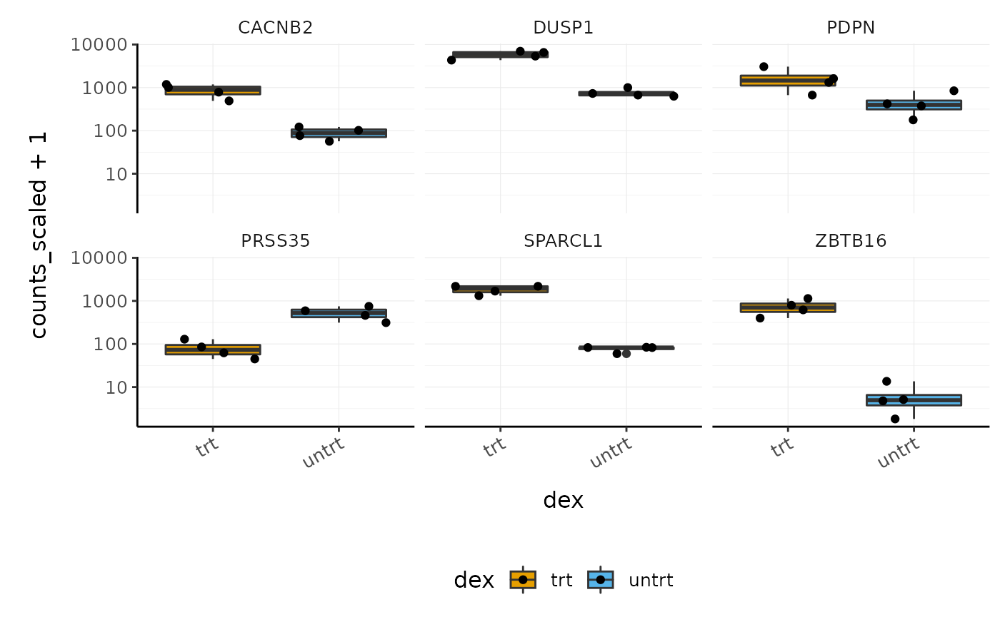
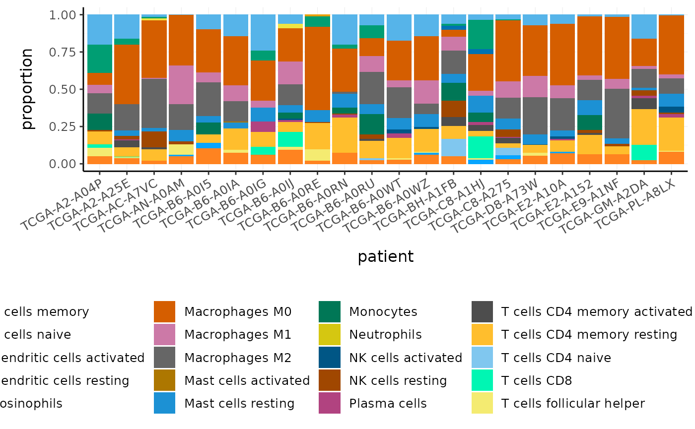
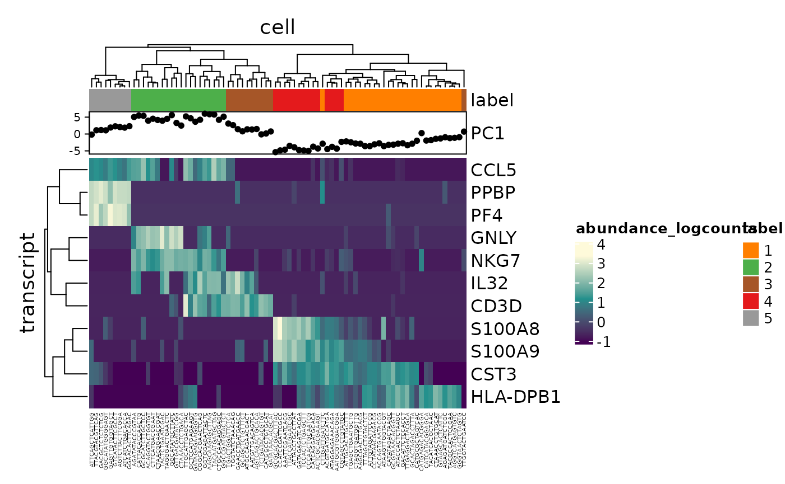

Introduction to Tidy Transcriptomics
Maria Doyle, Peter MacCallum Cancer Centre1
Stefano Mangiola, Walter and Eliza Hall Institute2
Source:vignettes/tidytranscriptomics.Rmd
tidytranscriptomics.RmdPart 1 Bulk RNA-seq Core
This workshop will present how to perform analysis of RNA sequencing data following the tidy data paradigm (Wickham and others 2014). The tidy data paradigm provides a standard way to organise data values within a dataset, where each variable is a column, each observation is a row, and data is manipulated using an easy-to-understand vocabulary. Most importantly, the data structure remains consistent across manipulation and analysis functions.
This can be achieved for RNA sequencing data with the tidybulk, tidyHeatmap (Mangiola and Papenfuss 2020) and tidyverse (Wickham et al. 2019) packages. The tidybulk package provides a tidy data structure and a modular framework for bulk transcriptional analyses. tidyHeatmap provides a tidy implementation of ComplexHeatmap. These packages are part of the tidytranscriptomics suite that introduces a tidy approach to RNA sequencing data representation and analysis
Acknowledgements
Some of the material in Part 1 was adapted from an R for RNA sequencing workshop first run here. Use of the airway dataset was inspired by the DESeq2 vignette.

Introduction
Measuring gene expression on a genome-wide scale has become common practice over the last two decades or so, with microarrays predominantly used pre-2008. With the advent of next generation sequencing technology in 2008, an increasing number of scientists use this technology to measure and understand changes in gene expression in often complex systems. As sequencing costs have decreased, using RNA sequencing to simultaneously measure the expression of tens of thousands of genes for multiple samples has never been easier. The cost of these experiments has now moved from generating the data to storing and analysing it.
There are many steps involved in analysing an RNA sequencing dataset. Sequenced reads are aligned to a reference genome, then the number of reads mapped to each gene can be counted. This results in a table of counts, which is what we perform statistical analyses on in R. While mapping and counting are important and necessary tasks, today we will be starting from the count data and showing how differential expression analysis can be performed in a friendly way using the Bioconductor package, tidybulk.

First, let’s load all the packages we will need to analyse the data.
Note: you should load the tidybulk library after the tidyverse core packages for best integration.
# load libraries # dataset library(airway) # tidyverse core packages library(tibble) library(dplyr) library(tidyr) library(readr) library(stringr) library(ggplot2) # tidyverse-friendly packages library(plotly) library(ggrepel) library(GGally) library(tidyHeatmap) library(tidybulk)
Plot settings. Set the colours and theme we will use for our plots.
# Use colourblind-friendly colours friendly_cols <- dittoSeq::dittoColors() # Set theme custom_theme <- list( scale_fill_manual(values = friendly_cols), scale_color_manual(values = friendly_cols), theme_bw() + theme( panel.border = element_blank(), axis.line = element_line(), panel.grid.major = element_line(size = 0.2), panel.grid.minor = element_line(size = 0.1), text = element_text(size = 12), legend.position = "bottom", strip.background = element_blank(), axis.title.x = element_text(margin = margin(t = 10, r = 10, b = 10, l = 10)), axis.title.y = element_text(margin = margin(t = 10, r = 10, b = 10, l = 10)), axis.text.x = element_text(angle = 30, hjust = 1, vjust = 1) ) )
Setting up the data
Here we will perform our analysis using the data from the airway package. The airway data comes from the paper by (Himes et al. 2014); and it includes 8 samples from human airway smooth muscle cells, from 4 cell lines. For each cell line treated (with dexamethasone) and untreated (negative control) a sample has undergone RNA sequencing and gene counts have been generated.
The airway data is stored as a Bioconductor RangedSummarizedExperiment object. We will convert this object into a tidybulk tibble. A tibble is the tidyverse table format.
In this workshop we will be using the tidyverse pipe %>%. This ‘pipes’ the output from the command on the left into the command on the right/below. Using the pipe is not essential but it reduces the amount of code we need to write when we have multiple steps (as we’ll see later). It also can make the steps clearer and easier to see. For more details on the pipe see here.
# load airway RNA sequencing data data(airway) # convert to tidybulk tibble counts_airway <- airway %>% tidybulk() # take a look counts_airway #> # A tibble: 512,816 x 12 #> feature sample counts SampleName cell dex albut Run avgLength Experiment #> <fct> <fct> <int> <fct> <fct> <fct> <fct> <fct> <int> <fct> #> 1 ENSG00… SRR10… 679 GSM1275862 N613… untrt untrt SRR1… 126 SRX384345 #> 2 ENSG00… SRR10… 0 GSM1275862 N613… untrt untrt SRR1… 126 SRX384345 #> 3 ENSG00… SRR10… 467 GSM1275862 N613… untrt untrt SRR1… 126 SRX384345 #> 4 ENSG00… SRR10… 260 GSM1275862 N613… untrt untrt SRR1… 126 SRX384345 #> 5 ENSG00… SRR10… 60 GSM1275862 N613… untrt untrt SRR1… 126 SRX384345 #> 6 ENSG00… SRR10… 0 GSM1275862 N613… untrt untrt SRR1… 126 SRX384345 #> 7 ENSG00… SRR10… 3251 GSM1275862 N613… untrt untrt SRR1… 126 SRX384345 #> 8 ENSG00… SRR10… 1433 GSM1275862 N613… untrt untrt SRR1… 126 SRX384345 #> 9 ENSG00… SRR10… 519 GSM1275862 N613… untrt untrt SRR1… 126 SRX384345 #> 10 ENSG00… SRR10… 394 GSM1275862 N613… untrt untrt SRR1… 126 SRX384345 #> # … with 512,806 more rows, and 2 more variables: Sample <fct>, BioSample <fct>
The counts_airway object contains information about genes and samples, the first column has the Ensembl gene identifier, the second column has the sample identifier and the third column has the gene transcription abundance. The abundance is the number of reads aligning to the gene in each experimental sample. The remaining columns include sample-wise information. The dex column tells us whether the samples are treated or untreated and the cell column tells us what cell line they are from.
We can shorten the sample names. We can remove the SRR1039 prefix that’s present in all of them, as shorter names can fit better in some of the plots we will create. We can use mutate() together with str_replace() to remove the SRR1039 string from the sample column.
We can get the gene symbols for these Ensembl gene ids using the Bioconductor annotation package for human, org.Hs.eg.db and add them as a column using mutate again.
With tidyverse, all above steps can be linked with the %>%, as shown below. This has the benefits that
- no temporary variables need to be created
- less typing is required
- the steps can be seen more clearly.
# setup data workflow counts_tt <- airway %>% tidybulk() %>% mutate(sample=str_remove(sample, "SRR1039")) %>% mutate(symbol = AnnotationDbi::mapIds(org.Hs.eg.db::org.Hs.eg.db, keys = as.character(feature), keytype = "ENSEMBL", column="SYMBOL", multiVals = "first")) #> #> 'select()' returned 1:many mapping between keys and columns # take a look counts_tt #> # A tibble: 512,816 x 13 #> feature sample counts SampleName cell dex albut Run avgLength Experiment #> <fct> <chr> <int> <fct> <fct> <fct> <fct> <fct> <int> <fct> #> 1 ENSG00… 508 679 GSM1275862 N613… untrt untrt SRR1… 126 SRX384345 #> 2 ENSG00… 508 0 GSM1275862 N613… untrt untrt SRR1… 126 SRX384345 #> 3 ENSG00… 508 467 GSM1275862 N613… untrt untrt SRR1… 126 SRX384345 #> 4 ENSG00… 508 260 GSM1275862 N613… untrt untrt SRR1… 126 SRX384345 #> 5 ENSG00… 508 60 GSM1275862 N613… untrt untrt SRR1… 126 SRX384345 #> 6 ENSG00… 508 0 GSM1275862 N613… untrt untrt SRR1… 126 SRX384345 #> 7 ENSG00… 508 3251 GSM1275862 N613… untrt untrt SRR1… 126 SRX384345 #> 8 ENSG00… 508 1433 GSM1275862 N613… untrt untrt SRR1… 126 SRX384345 #> 9 ENSG00… 508 519 GSM1275862 N613… untrt untrt SRR1… 126 SRX384345 #> 10 ENSG00… 508 394 GSM1275862 N613… untrt untrt SRR1… 126 SRX384345 #> # … with 512,806 more rows, and 3 more variables: Sample <fct>, #> # BioSample <fct>, symbol <chr>
From this tidybulk tibble, we can perform differential expression analysis with the tidybulk package.
Filtering lowly transcribed genes
Genes with very low counts across all libraries provide little evidence for differential expression and they can interfere with some of the statistical approximations that are used later in the pipeline. They also add to the multiple testing burden when estimating false discovery rates, reducing power to detect differentially expressed genes. These genes should be filtered out prior to further analysis.
We can perform the filtering using tidybulk keep_abundant or identify_abundant. These functions can use the edgeR filterByExpr function described in (Law et al. 2016) to automatically identify the genes with adequate abundance for differential expression testing. By default, this will keep genes with ~10 counts in a minimum number of samples, the number of the samples in the smallest group. In this dataset the smallest group size is four (as we have four dex-treated samples vs four untreated). Alternatively, we could use identify_abundant to identify which genes are abundant or not (TRUE/FALSE), rather than just keeping the abundant ones.
# Filtering counts counts_filtered <- counts_tt %>% keep_abundant(factor_of_interest=dex) # take a look counts_filtered #> # A tibble: 127,408 x 14 #> feature sample counts SampleName cell dex albut Run avgLength Experiment #> <fct> <chr> <int> <fct> <fct> <fct> <fct> <fct> <int> <fct> #> 1 ENSG00… 508 679 GSM1275862 N613… untrt untrt SRR1… 126 SRX384345 #> 2 ENSG00… 508 467 GSM1275862 N613… untrt untrt SRR1… 126 SRX384345 #> 3 ENSG00… 508 260 GSM1275862 N613… untrt untrt SRR1… 126 SRX384345 #> 4 ENSG00… 508 60 GSM1275862 N613… untrt untrt SRR1… 126 SRX384345 #> 5 ENSG00… 508 3251 GSM1275862 N613… untrt untrt SRR1… 126 SRX384345 #> 6 ENSG00… 508 1433 GSM1275862 N613… untrt untrt SRR1… 126 SRX384345 #> 7 ENSG00… 508 519 GSM1275862 N613… untrt untrt SRR1… 126 SRX384345 #> 8 ENSG00… 508 394 GSM1275862 N613… untrt untrt SRR1… 126 SRX384345 #> 9 ENSG00… 508 172 GSM1275862 N613… untrt untrt SRR1… 126 SRX384345 #> 10 ENSG00… 508 2112 GSM1275862 N613… untrt untrt SRR1… 126 SRX384345 #> # … with 127,398 more rows, and 4 more variables: Sample <fct>, #> # BioSample <fct>, symbol <chr>, .abundant <lgl>
After running keep_abundant we have a column called .abundant containing TRUE (identify_abundant would have TRUE/FALSE).
Scaling counts to normalise
Scaling of counts, normalisation, is performed to eliminate uninteresting differences between samples due to sequencing depth or composition. A more detailed explanation can be found here. In the tidybulk package the function scale_abundance generates scaled counts, with scaling factors calculated on abundant (filtered) transcripts and applied to all transcripts. We can choose from different normalisation methods. Here we will use the default, edgeR’s trimmed mean of M values (TMM), (Robinson and Oshlack 2010). TMM normalisation (and most scaling normalisation methods) scale relative to one sample.
# Scaling counts counts_scaled <- counts_filtered %>% scale_abundance() # take a look counts_scaled #> # A tibble: 127,408 x 17 #> feature sample counts SampleName cell dex albut Run avgLength Experiment #> <fct> <chr> <int> <fct> <fct> <fct> <fct> <fct> <int> <fct> #> 1 ENSG00… 508 679 GSM1275862 N613… untrt untrt SRR1… 126 SRX384345 #> 2 ENSG00… 508 467 GSM1275862 N613… untrt untrt SRR1… 126 SRX384345 #> 3 ENSG00… 508 260 GSM1275862 N613… untrt untrt SRR1… 126 SRX384345 #> 4 ENSG00… 508 60 GSM1275862 N613… untrt untrt SRR1… 126 SRX384345 #> 5 ENSG00… 508 3251 GSM1275862 N613… untrt untrt SRR1… 126 SRX384345 #> 6 ENSG00… 508 1433 GSM1275862 N613… untrt untrt SRR1… 126 SRX384345 #> 7 ENSG00… 508 519 GSM1275862 N613… untrt untrt SRR1… 126 SRX384345 #> 8 ENSG00… 508 394 GSM1275862 N613… untrt untrt SRR1… 126 SRX384345 #> 9 ENSG00… 508 172 GSM1275862 N613… untrt untrt SRR1… 126 SRX384345 #> 10 ENSG00… 508 2112 GSM1275862 N613… untrt untrt SRR1… 126 SRX384345 #> # … with 127,398 more rows, and 7 more variables: Sample <fct>, #> # BioSample <fct>, symbol <chr>, .abundant <lgl>, TMM <dbl>, #> # multiplier <dbl>, counts_scaled <dbl>
After we run scale_abundance we should see some columns have been added at the end. The counts_scaled column contains the scaled counts.
We can visualise the difference of abundance densities before and after scaling. As tidybulk output is compatible with tidyverse, we can simply pipe it into standard tidyverse functions such as filter, pivot_longer and ggplot. We can also take advantage of ggplot’s facet_wrap to easily create multiple plots.
counts_scaled %>% # Reshaping pivot_longer(cols = c("counts", "counts_scaled"), names_to = "source", values_to = "abundance") %>% # Plotting ggplot(aes(x=abundance + 1, color=sample)) + geom_density() + facet_wrap(~source) + scale_x_log10() + custom_theme
In this dataset the distributions of the counts are not very different to each other before scaling but scaling does make the distributions more similar. If we saw a sample with a very different distribution we may need to investigate it.
As tidybulk smoothly integrates with ggplot2 and other tidyverse packages it can save on typing and make plots easier to generate. Compare the code for creating density plots with tidybulk versus standard base R below (standard code adapted from (Law et al. 2016)).
tidybulk
# tidybulk airway %>% tidybulk() %>% keep_abundant(factor_of_interest=dex) %>% scale_abundance() %>% pivot_longer(cols = c("counts", "counts_scaled"), names_to = "source", values_to = "abundance") %>% ggplot(aes(x=abundance + 1, color=sample)) + geom_density() + facet_wrap(~source) + scale_x_log10() + custom_theme
base R using edgeR
# Example code, no need to run # Prepare data set library(edgeR) dgList <- SE2DGEList(airway) group <- factor(dgList$samples$dex) keep.exprs <- filterByExpr(dgList, group=group) dgList <- dgList[keep.exprs,, keep.lib.sizes=FALSE] nsamples <- ncol(dgList) logcounts <- log2(dgList$counts) # Setup graphics col <- RColorBrewer::brewer.pal(nsamples, "Paired") par(mfrow=c(1,2)) # Plot raw counts plot(density(logcounts[,1]), col=col[1], lwd=2, ylim=c(0,0.26), las=2, main="", xlab="") title(main="Counts") for (i in 2:nsamples){ den <- density(logcounts[,i]) lines(den$x, den$y, col=col[i], lwd=2) } legend("topright", legend=dgList$samples$Run, text.col=col, bty="n") # Plot scaled counts dgList_norm <- calcNormFactors(dgList) lcpm_n <- cpm(dgList_norm, log=TRUE) plot(density(lcpm_n[,1]), col=col[1], lwd=2, ylim=c(0,0.26), las=2, main="", xlab="") title("Counts scaled") for (i in 2:nsamples){ den <- density(lcpm_n[,i]) lines(den$x, den$y, col=col[i], lwd=2) } legend("topright", legend=dgList_norm$samples$Run, text.col=col, bty="n")
Exploratory analyses
Dimensionality reduction
By far, one of the most important plots we make when we analyse RNA sequencing data are principal-component analysis (PCA) or multi-dimensional scaling (MDS) plots. We reduce the dimensions of the data to identify the greatest sources of variation in the data. A principal components analysis is an example of an unsupervised analysis, where we don’t need to specify the groups. If your experiment is well controlled and has worked well, what we hope to see is that the greatest sources of variation in the data are the treatments/groups we are interested in. It is also an incredibly useful tool for quality control and checking for outliers. We can use the reduce_dimensions function to calculate the dimensions.
# Get principal components counts_scal_PCA <- counts_scaled %>% reduce_dimensions(method="PCA") #> Getting the 500 most variable genes #> Fraction of variance explained by the selected principal components #> # A tibble: 2 x 2 #> `Fraction of variance` PC #> <dbl> <int> #> 1 0.355 1 #> 2 0.309 2 #> tidybulk says: to access the raw results do `attr(..., "internals")$PCA`
This joins the result to the counts object.
# Take a look counts_scal_PCA #> # A tibble: 127,408 x 19 #> feature sample counts SampleName cell dex albut Run avgLength Experiment #> <fct> <chr> <int> <fct> <fct> <fct> <fct> <fct> <int> <fct> #> 1 ENSG00… 508 679 GSM1275862 N613… untrt untrt SRR1… 126 SRX384345 #> 2 ENSG00… 508 467 GSM1275862 N613… untrt untrt SRR1… 126 SRX384345 #> 3 ENSG00… 508 260 GSM1275862 N613… untrt untrt SRR1… 126 SRX384345 #> 4 ENSG00… 508 60 GSM1275862 N613… untrt untrt SRR1… 126 SRX384345 #> 5 ENSG00… 508 3251 GSM1275862 N613… untrt untrt SRR1… 126 SRX384345 #> 6 ENSG00… 508 1433 GSM1275862 N613… untrt untrt SRR1… 126 SRX384345 #> 7 ENSG00… 508 519 GSM1275862 N613… untrt untrt SRR1… 126 SRX384345 #> 8 ENSG00… 508 394 GSM1275862 N613… untrt untrt SRR1… 126 SRX384345 #> 9 ENSG00… 508 172 GSM1275862 N613… untrt untrt SRR1… 126 SRX384345 #> 10 ENSG00… 508 2112 GSM1275862 N613… untrt untrt SRR1… 126 SRX384345 #> # … with 127,398 more rows, and 9 more variables: Sample <fct>, #> # BioSample <fct>, symbol <chr>, .abundant <lgl>, TMM <dbl>, #> # multiplier <dbl>, counts_scaled <dbl>, PC1 <dbl>, PC2 <dbl>
For plotting, we can select just the sample-wise information with pivot_sample.
# take a look counts_scal_PCA %>% pivot_sample() #> # A tibble: 8 x 15 #> sample SampleName cell dex albut Run avgLength Experiment Sample #> <chr> <fct> <fct> <fct> <fct> <fct> <int> <fct> <fct> #> 1 508 GSM1275862 N613… untrt untrt SRR1… 126 SRX384345 SRS50… #> 2 509 GSM1275863 N613… trt untrt SRR1… 126 SRX384346 SRS50… #> 3 512 GSM1275866 N052… untrt untrt SRR1… 126 SRX384349 SRS50… #> 4 513 GSM1275867 N052… trt untrt SRR1… 87 SRX384350 SRS50… #> 5 516 GSM1275870 N080… untrt untrt SRR1… 120 SRX384353 SRS50… #> 6 517 GSM1275871 N080… trt untrt SRR1… 126 SRX384354 SRS50… #> 7 520 GSM1275874 N061… untrt untrt SRR1… 101 SRX384357 SRS50… #> 8 521 GSM1275875 N061… trt untrt SRR1… 98 SRX384358 SRS50… #> # … with 6 more variables: BioSample <fct>, .abundant <lgl>, TMM <dbl>, #> # multiplier <dbl>, PC1 <dbl>, PC2 <dbl>
We can now plot the reduced dimensions.
# PCA plot counts_scal_PCA %>% pivot_sample() %>% ggplot(aes(x=PC1, y=PC2, colour=dex, shape=cell)) + geom_point() + geom_text_repel(aes(label=sample), show.legend = FALSE) + custom_theme

The samples separate by treatment on PC1 which is what we hope to see. PC2 separates the N080611 cell line from the other samples, indicating a greater difference between that cell line and the others.
Hierarchical clustering with heatmaps
An alternative to principal component analysis for examining relationships between samples is using hierarchical clustering. Heatmaps are a nice visualisation to examine hierarchical clustering of your samples. tidybulk has a simple function we can use, keep_variable, to extract the most variable genes which we can then plot with tidyHeatmap.
counts_scal_PCA %>% # extract 500 most variable genes keep_variable(.abundance = counts_scaled, top = 500) %>% # create heatmap heatmap( .column = sample, .row = feature, .value = counts_scaled, transform = log1p ) %>% add_tile(dex) %>% add_tile(cell) #> Getting the 500 most variable genes
In the heatmap we can see the samples cluster into two groups, treated and untreated, for three of the cell lines, and the cell line (N080611) again is further away from the others.
Tidybulk enables a simplified way of generating a clustered heatmap of variable genes. Compare the code below for tidybulk versus a base R method.
base R using edgeR
# Example code, no need to run library(edgeR) dgList <- SE2DGEList(airway) group <- factor(dgList$samples$dex) keep.exprs <- filterByExpr(dgList, group=group) dgList <- dgList[keep.exprs,, keep.lib.sizes=FALSE] dgList <- calcNormFactors(dgList) logcounts <- cpm(dgList, log=TRUE) var_genes <- apply(logcounts, 1, var) select_var <- names(sort(var_genes, decreasing=TRUE))[1:500] highly_variable_lcpm <- logcounts[select_var,] colours <- c("#440154FF", "#21908CFF", "#fefada" ) col.group <- c("red","grey")[group] gplots::heatmap.2(highly_variable_lcpm, col=colours, trace="none", ColSideColors=col.group, scale="row")
Differential expression
tidybulk integrates several popular methods for differential transcript abundance testing: the edgeR quasi-likelihood (Chen, Lun, and Smyth 2016) (tidybulk default method), edgeR likelihood ratio (McCarthy, Chen, and Smyth 2012), limma-voom (Law et al. 2014) and DESeq2 (Love, Huber, and Anders 2014). A common question researchers have is which method to choose. With tidybulk we can easily run multiple methods and compare.
We give test_differential_abundance our tidybulk counts object and a formula, specifying the column that contains our groups to be compared. If all our samples were from the same cell line, and there were no additional factors contributing variance such as batch differences, we could use the formula ~ dex. However, each treated and untreated sample is from a different cell line so we add the cell line as an additional factor ~ dex + cell.
de_all <- counts_scal_PCA %>% # edgeR QLT test_differential_abundance( ~ dex + cell, method = "edger_quasi_likelihood", prefix = "edgerQLT_" ) %>% # edgeR LRT test_differential_abundance( ~ dex + cell, method = "edger_likelihood_ratio", prefix = "edgerLR_" ) %>% # limma-voom test_differential_abundance( ~ dex + cell, method = "limma_voom", prefix = "voom_" ) %>% # DESeq2 test_differential_abundance( ~ dex + cell, method = "deseq2", prefix = "deseq2_" ) # take a look de_all #> # A tibble: 127,408 x 41 #> feature sample counts SampleName cell dex albut Run avgLength Experiment #> <chr> <chr> <int> <fct> <fct> <fct> <fct> <fct> <int> <fct> #> 1 ENSG00… 508 679 GSM1275862 N613… untrt untrt SRR1… 126 SRX384345 #> 2 ENSG00… 508 467 GSM1275862 N613… untrt untrt SRR1… 126 SRX384345 #> 3 ENSG00… 508 260 GSM1275862 N613… untrt untrt SRR1… 126 SRX384345 #> 4 ENSG00… 508 60 GSM1275862 N613… untrt untrt SRR1… 126 SRX384345 #> 5 ENSG00… 508 3251 GSM1275862 N613… untrt untrt SRR1… 126 SRX384345 #> 6 ENSG00… 508 1433 GSM1275862 N613… untrt untrt SRR1… 126 SRX384345 #> 7 ENSG00… 508 519 GSM1275862 N613… untrt untrt SRR1… 126 SRX384345 #> 8 ENSG00… 508 394 GSM1275862 N613… untrt untrt SRR1… 126 SRX384345 #> 9 ENSG00… 508 172 GSM1275862 N613… untrt untrt SRR1… 126 SRX384345 #> 10 ENSG00… 508 2112 GSM1275862 N613… untrt untrt SRR1… 126 SRX384345 #> # … with 127,398 more rows, and 31 more variables: Sample <fct>, #> # BioSample <fct>, symbol <chr>, .abundant <lgl>, TMM <dbl>, #> # multiplier <dbl>, counts_scaled <dbl>, PC1 <dbl>, PC2 <dbl>, #> # edgerQLT_logFC <dbl>, edgerQLT_logCPM <dbl>, edgerQLT_F <dbl>, #> # edgerQLT_PValue <dbl>, edgerQLT_FDR <dbl>, edgerLR_logFC <dbl>, #> # edgerLR_logCPM <dbl>, edgerLR_LR <dbl>, edgerLR_PValue <dbl>, #> # edgerLR_FDR <dbl>, voom_logFC <dbl>, voom_AveExpr <dbl>, voom_t <dbl>, #> # voom_P.Value <dbl>, voom_adj.P.Val <dbl>, voom_B <dbl>, #> # deseq2_baseMean <dbl>, deseq2_log2FoldChange <dbl>, deseq2_lfcSE <dbl>, #> # deseq2_stat <dbl>, deseq2_pvalue <dbl>, deseq2_padj <dbl>
This outputs the columns from each method such as log-fold change (logFC), false-discovery rate (FDR) and probability value (p-value). logFC is log2(treated/untreated).
We can visually compare the significance for all methods. We will notice that there is some difference between the methods.
de_all %>% pivot_transcript() %>% select(edgerQLT_PValue, edgerLR_PValue, voom_P.Value, deseq2_pvalue, feature) %>% ggpairs(1:4)

Note: You may notice that the methods produce columns with different names for similar outputs. If you wish to make these consistent you can do that with tidyverse rename. For example, to rename the p value adjusted columns you could run below.
de_all %>% rename(deseq2_FDR = deseq2_padj, voom_FDR = voom_adj.P.Val)
Or if we just wanted to run one method we could do that. The default method is edgeR quasi-likelihood.
counts_de <- counts_scal_PCA %>% test_differential_abundance(~ dex + cell) #> tidybulk says: All methods use raw counts, #> irrespective of if scale_abundance or adjust_abundance have been calculated, #> therefore it is essential to add covariates such as batch effects (if applicable) in the formula. #> tidybulk says: The design column names are "(Intercept), dexuntrt, cellN061011, cellN080611, cellN61311" #> tidybulk says: to access the raw results (fitted GLM) do `attr(..., "internals")$edgeR`
Tidybulk enables a simplified way of performing an RNA sequencing differential expression analysis (with the benefit of smoothly integrating with ggplot2 and other tidyverse packages). Compare the code for a tidybulk edgeR analysis versus standard edgeR below.
standard edgeR
# Example code, no need to run library(edgeR) dgList <- SE2DGEList(airway) group <- factor(dgList$samples$dex) keep.exprs <- filterByExpr(dgList, group=group) dgList <- dgList[keep.exprs,, keep.lib.sizes=FALSE] dgList <- calcNormFactors(dgList) cell <- factor(dgList$samples$cell) design <- model.matrix(~ 0 + group + cell) dgList <- estimateDisp(dgList, design) fit <- glmQLFit(dgList, design) TvsU <- makeContrasts(TvsU=grouptrt-groupuntrt, levels=design) qlf <- glmQLFTest(fit, contrast=TvsU)
Plots after testing for differentially expressed
We’ll extract the symbols for a few top genes (by P value) to use in some of the plots we will make.
topgenes_symbols <- counts_de %>% pivot_transcript() %>% arrange(PValue) %>% head(6) %>% pull(symbol)
Volcano plots
Volcano plots are a useful genome-wide plot for checking that the analysis looks good. Volcano plots enable us to visualise the significance of change (p-value) versus the fold change (logFC). Highly significant genes are towards the top of the plot. We can also colour significant genes (e.g. genes with false-discovery rate < 0.05)
# volcano plot, minimal counts_de %>% ggplot(aes(x=logFC, y=PValue, colour=FDR < 0.05)) + geom_point() + scale_y_continuous(trans = "log10_reverse") + custom_theme
A more informative plot, integrating some of the packages in tidyverse.
counts_de %>% pivot_transcript() %>% # Subset data mutate(significant = FDR<0.05 & abs(logFC) >=2) %>% mutate(symbol = ifelse(symbol %in% topgenes_symbols, as.character(symbol), "")) %>% # Plot ggplot(aes(x = logFC, y = PValue, label=symbol)) + geom_point(aes(color = significant, size = significant, alpha=significant)) + geom_text_repel() + # Custom scales custom_theme + scale_y_continuous(trans = "log10_reverse") + scale_color_manual(values=c("black", "#e11f28")) + scale_size_discrete(range = c(0, 2)) #> Scale for 'colour' is already present. Adding another scale for 'colour', #> which will replace the existing scale.

Stripcharts
Before following up on the differentially expressed genes with further lab work, it is also recommended to have a look at the expression levels of the individual samples for the genes of interest. We can use stripcharts to do this. These will help show if expression is consistent amongst replicates in the groups.
With stripcharts we can see if replicates tend to group together and how the expression compares to the other groups. We’ll also add a box plot to show the distribution. Tidyverse faceting makes it easy to create a plot for each gene.
strip_chart <- counts_scaled %>% # extract counts for top differentially expressed genes filter(symbol %in% topgenes_symbols) %>% # make faceted stripchart ggplot(aes(x = dex, y = counts_scaled + 1, fill = dex, label = sample)) + geom_boxplot() + geom_jitter() + facet_wrap(~symbol) + scale_y_log10()+ custom_theme strip_chart

Interactive Plots
A really nice feature of using tidyverse and ggplot2 is that we can make interactive plots quite easily using the plotly package. This can be very useful for exploring what genes or samples are in the plots. We can make interactive plots directly from our ggplot2 object (strip_chart). Having label in the aes is useful to visualise the identifier of the data point (here the sample id) or other variables when we hover over the plot.
We can also specify which parameters from the aes we want to show up when we hover over the plot with tooltip.
Automatic bibliography
Tidybulk provides a handy function called get_bibliography that keeps track of the references for the methods used in your tidybulk workflow. The references are in BibTeX format and can be imported into your reference manager.
get_bibliography(counts_de) #> @article{robinson2010edger, #> title={edgeR: a Bioconductor package for differential expression analysis of digital gene expression data}, #> author={Robinson, Mark D and McCarthy, Davis J and Smyth, Gordon K}, #> journal={Bioinformatics}, #> volume={26}, #> number={1}, #> pages={139--140}, #> year={2010}, #> publisher={Oxford University Press} #> } #> @article{robinson2010scaling, #> title={A scaling normalization method for differential expression analysis of RNA-seq data}, #> author={Robinson, Mark D and Oshlack, Alicia}, #> journal={Genome biology}, #> volume={11}, #> number={3}, #> pages={1--9}, #> year={2010}, #> publisher={BioMed Central} #> } #> @Manual{, #> title = {R: A Language and Environment for Statistical Computing}, #> author = {{R Core Team}}, #> organization = {R Foundation for Statistical Computing}, #> address = {Vienna, Austria}, #> year = {2020}, #> url = {https://www.R-project.org/}, #> } #> @incollection{smyth2005limma, #> title={Limma: linear models for microarray data}, #> author={Smyth, Gordon K}, #> booktitle={Bioinformatics and computational biology solutions using R and Bioconductor}, #> pages={397--420}, #> year={2005}, #> publisher={Springer} #> }
Cell type composition analysis
If we are sequencing tissue samples, we may want to know what cell types are present and if there are differences in expression between them. tidybulk has a deconvolve_cellularity function that can help us do this.
For this example we will use a subset of the breast cancer dataset from The Cancer Genome Atlas (TCGA).
BRCA_tidy <- biocasia2020tidytranscriptomics::BRCA %>% tidybulk(patient, transcript, count) BRCA_tidy #> # A tibble: 198,374 x 5 #> patient transcript count time event_occurred #> <fct> <fct> <int> <dbl> <int> #> 1 TCGA-C8-A275 C1orf112 1571 1 0 #> 2 TCGA-C8-A275 FGR 1873 1 0 #> 3 TCGA-C8-A275 FUCA2 3770 1 0 #> 4 TCGA-C8-A275 GCLC 2738 1 0 #> 5 TCGA-C8-A275 LAS1L 3175 1 0 #> 6 TCGA-C8-A275 ENPP4 1340 1 0 #> 7 TCGA-C8-A275 SEMA3F 5479 1 0 #> 8 TCGA-C8-A275 RAD52 472 1 0 #> 9 TCGA-C8-A275 BAD 1761 1 0 #> 10 TCGA-C8-A275 CD99 14697 1 0 #> # … with 198,364 more rows
With tidybulk, we can easily infer the proportions of cell types within a tissue using one of several published methods (Cibersort (Newman et al. 2015), EPIC (Racle et al. 2017) and llsr (Abbas et al. 2009)). Here we will use Cibersort which provides a default signature called LM22 to define the cell types. LM22 contains 547 genes that identify 22 human immune cell types.
deconvolve_cellularity adds cell type proportions to the tibble as new columns. The prefix makes it easy to reshape the data frame if needed, for visualisation or further analyses. For example, we can plot the proportions of immune cell types for each patient.
BRCA_tidy %>% # Identifying cell types deconvolve_cellularity(action="get") %>% # Reshaping pivot_longer( contains("cibersort"), names_prefix = "cibersort: ", names_to = "cell_type", values_to = "proportion" ) %>% # Plotting ggplot(aes(x=patient, y=proportion, fill=cell_type)) + geom_bar(stat = "identity") + custom_theme

Key Points
- RNA sequencing data can be represented and analysed in a ‘tidy’ way using tidybulk and the tidyverse
- With the modularity offered by piping we don’t need to create variables, unless an object is used more than one. This improves robustness of the code.
- The principles of tidy transcriptomics are to interface as much as possible with commonly known manipulation and visualisation tools, rather than creating custom functions.
- Some of the key steps in an RNA sequencing analysis are (i) filtering lowly abundant transcripts, (ii) adjusting for differences in sequencing depth and composition, (iii) testing for differential expression
- Dimensionality reduction (PCA or MDS) plots are very important for exploring the data
- Density plots, volcano plots, strip-charts and heatmaps are useful visualisation tools for evaluating the hypothesis testing.
-
tidybulkallows streamlined multi-method analyses -
tidybulkallow easy analyses of cell type composition - Testing for differences in tissue composition between samples is analogous to the testing for differences in transcript abundance
Supplementary
Some things we don’t have time to cover in Part 1 of this workshop can be found in the Supplementary material.
Part 2 Single-cell RNA-seq
Introduction

In Part 1 we showed how we can study the cell-type composition of a biological sample using bulk RNA sequencing. Single cell sequencing enables a more direct estimation of cell-type composition and gives greater resolution. For bulk RNA sequencing we need to infer the cell types using the abundance of transcripts in the whole sample, with single-cell RNA sequencing we can directly measure the transcripts in each cell and then classify the cells into cell types.
SingleCellExperiment is a very popular container for single cell RNA sequencing data (Lun and Risso 2020).
tidySCE provides a bridge between the SingleCellExperiment single-cell package (Lun and Risso 2020) and the tidyverse (Wickham et al. 2019). It enables the display of the SingleCellExperiment object as a tidyverse tibble, and provides SingleCellExperiment-compatible dplyr, tidyr, ggplot and plotly functions.
Create tidySCE
This is a SingleCellExperiment object but it is evaluated as tibble. So it is fully compatible both with SingleCellExperiment and tidyverse APIs.
pbmc_small_tidy <- biocasia2020tidytranscriptomics::pbmc_small %>% tidy()
It looks like a tibble
pbmc_small_tidy #> # A tibble abstraction: 80 x 3 #> cell groups file #> <chr> <chr> <chr> #> 1 ATGCCAGAACGACT g2 ../data/sample2/outs/filtered_feature_bc_matrix/ #> 2 CATGGCCTGTGCAT g1 ../data/sample1/outs/filtered_feature_bc_matrix/ #> 3 GAACCTGATGAACC g2 ../data/sample2/outs/filtered_feature_bc_matrix/ #> 4 TGACTGGATTCTCA g2 ../data/sample2/outs/filtered_feature_bc_matrix/ #> 5 AGTCAGACTGCACA g2 ../data/sample2/outs/filtered_feature_bc_matrix/ #> 6 TCTGATACACGTGT g1 ../data/sample1/outs/filtered_feature_bc_matrix/ #> 7 TGGTATCTAAACAG g1 ../data/sample1/outs/filtered_feature_bc_matrix/ #> 8 GCAGCTCTGTTTCT g1 ../data/sample1/outs/filtered_feature_bc_matrix/ #> 9 GATATAACACGCAT g1 ../data/sample1/outs/filtered_feature_bc_matrix/ #> 10 AATGTTGACAGTCA g1 ../data/sample1/outs/filtered_feature_bc_matrix/ #> # … with 70 more rows
But it is a SingleCellExperiment object after all
assays(pbmc_small_tidy) #> List of length 1 #> names(1): counts
Polish the data
We can interact with our object as we do with any tibble. In this case we want to polish an annotation column.
pbmc_small_polished <- pbmc_small_tidy %>% # Clean groups mutate(groups = groups %>% str_remove("^g")) %>% # Extract sample extract(file, "sample", "../data/sample([a-z0-9]+)/outs.+") pbmc_small_polished #> # A tibble abstraction: 80 x 3 #> cell groups sample #> <chr> <chr> <chr> #> 1 ATGCCAGAACGACT 2 2 #> 2 CATGGCCTGTGCAT 1 1 #> 3 GAACCTGATGAACC 2 2 #> 4 TGACTGGATTCTCA 2 2 #> 5 AGTCAGACTGCACA 2 2 #> 6 TCTGATACACGTGT 1 1 #> 7 TGGTATCTAAACAG 1 1 #> 8 GCAGCTCTGTTTCT 1 1 #> 9 GATATAACACGCAT 1 1 #> 10 AATGTTGACAGTCA 1 1 #> # … with 70 more rows
Calculate the log of the scaled counts
We can treat pbmc_small_polished as a SingleCellExperiment object
Exploratory analyses
Here we plot abundance of two transcripts for each group.
pbmc_small_polished_abundance = pbmc_small_polished %>% # Extract abundance join_transcripts(transcripts=c("HLA-DRA", "TCL1A")) #> tidySCE says: A data frame is returned for independent data analysis. pbmc_small_polished_abundance #> # A tibble: 160 x 6 #> cell transcript abundance_counts abundance_logcounts groups sample #> <chr> <chr> <dbl> <dbl> <chr> <chr> #> 1 ATGCCAGAACGACT HLA-DRA 0 0 2 2 #> 2 ATGCCAGAACGACT TCL1A 0 0 2 2 #> 3 CATGGCCTGTGCAT HLA-DRA 1 1.96 1 1 #> 4 CATGGCCTGTGCAT TCL1A 0 0 1 1 #> 5 GAACCTGATGAACC HLA-DRA 0 0 2 2 #> 6 GAACCTGATGAACC TCL1A 0 0 2 2 #> 7 TGACTGGATTCTCA HLA-DRA 0 0 2 2 #> 8 TGACTGGATTCTCA TCL1A 0 0 2 2 #> 9 AGTCAGACTGCACA HLA-DRA 1 1.27 2 2 #> 10 AGTCAGACTGCACA TCL1A 0 0 2 2 #> # … with 150 more rows
We proceed to plot. Note: we don’t need to create many of these temporary variables. They are created here for educational purposes only.
pbmc_small_polished_abundance %>% ggplot2::ggplot(aes(groups, abundance_counts + 1, fill=groups)) + geom_boxplot(outlier.shape=NA) + geom_jitter(alpha=0.5, width=0.2) + scale_y_log10() + custom_theme
Reduce dimensions
PCA
We proceed with data processing with Bioconductor packages, such as scran (Lun, McCarthy, and Marioni 2016) and scater (McCarthy et al. 2017).
variable_genes <- pbmc_small_polished %>% modelGeneVar() %>% getTopHVGs(prop=0.1) # Perform PCA with scater pbmc_small_pca <- pbmc_small_polished %>% runPCA(subset_row=variable_genes) #> Warning in check_numbers(k = k, nu = nu, nv = nv, limit = min(dim(x)) - : more #> singular values/vectors requested than available #> Warning in (function (A, nv = 5, nu = nv, maxit = 1000, work = nv + 7, reorth = #> TRUE, : You're computing too large a percentage of total singular values, use a #> standard svd instead. pbmc_small_pca #> # A tibble abstraction: 80 x 8 #> cell groups sample PC1 PC2 PC3 PC4 PC5 #> <chr> <chr> <chr> <dbl> <dbl> <dbl> <dbl> <dbl> #> 1 ATGCCAGAACGACT 2 2 1.39 0.293 2.53 3.56 -1.54 #> 2 CATGGCCTGTGCAT 1 1 0.146 0.181 1.32 3.13 -1.88 #> 3 GAACCTGATGAACC 2 2 1.44 -0.447 1.35 4.87 -1.11 #> 4 TGACTGGATTCTCA 2 2 3.09 0.434 1.54 3.30 -0.551 #> 5 AGTCAGACTGCACA 2 2 1.49 0.521 1.86 2.20 -1.62 #> 6 TCTGATACACGTGT 1 1 -0.103 0.0920 1.86 2.38 -1.14 #> 7 TGGTATCTAAACAG 1 1 2.63 0.0449 2.00 3.86 0.0704 #> 8 GCAGCTCTGTTTCT 1 1 0.796 0.636 1.31 4.20 -1.42 #> 9 GATATAACACGCAT 1 1 0.756 -0.0762 2.29 2.41 -1.99 #> 10 AATGTTGACAGTCA 1 1 1.34 0.282 2.32 3.18 -1.63 #> # … with 70 more rows
If a tidyverse-compatible package is not included in the tidySCE collection, we can use as_tibble to permanently convert tidySCE into a tibble.
# Create pairs plot with GGally pbmc_small_pca %>% as_tibble() %>% GGally::ggpairs(columns=4:8, ggplot2::aes(colour=groups)) + custom_theme

UMAP
Beside PCA which is a linear dimensionality reduction, we can apply neighbour aware methods such as UMAP, to better define locally similar cells. We can calculate the first 3 UMAP dimensions using the scater framework.
pbmc_small_UMAP <- pbmc_small_pca %>% runUMAP(ncomponents=3) pbmc_small_UMAP #> # A tibble abstraction: 80 x 11 #> cell groups sample PC1 PC2 PC3 PC4 PC5 UMAP1 UMAP2 UMAP3 #> <chr> <chr> <chr> <dbl> <dbl> <dbl> <dbl> <dbl> <dbl> <dbl> <dbl> #> 1 ATGCCAGAA… 2 2 1.39 0.293 2.53 3.56 -1.54 12.0 0.483 -3.79 #> 2 CATGGCCTG… 1 1 0.146 0.181 1.32 3.13 -1.88 11.7 1.01 -3.90 #> 3 GAACCTGAT… 2 2 1.44 -0.447 1.35 4.87 -1.11 11.9 0.620 -4.14 #> 4 TGACTGGAT… 2 2 3.09 0.434 1.54 3.30 -0.551 11.9 0.533 -4.08 #> 5 AGTCAGACT… 2 2 1.49 0.521 1.86 2.20 -1.62 11.6 0.707 -3.98 #> 6 TCTGATACA… 1 1 -0.103 0.0920 1.86 2.38 -1.14 12.2 0.617 -3.99 #> 7 TGGTATCTA… 1 1 2.63 0.0449 2.00 3.86 0.0704 12.0 0.772 -3.79 #> 8 GCAGCTCTG… 1 1 0.796 0.636 1.31 4.20 -1.42 12.1 0.830 -3.91 #> 9 GATATAACA… 1 1 0.756 -0.0762 2.29 2.41 -1.99 12.0 0.607 -4.09 #> 10 AATGTTGAC… 1 1 1.34 0.282 2.32 3.18 -1.63 12.0 0.844 -3.85 #> # … with 70 more rows
Identify clusters
We can proceed with cluster identification with scran.
pbmc_small_cluster <- pbmc_small_UMAP # Assign clusters to the 'colLabels' of the SingleCellExperiment object colLabels(pbmc_small_cluster) <- pbmc_small_pca %>% buildSNNGraph(use.dimred="PCA") %>% cluster_walktrap() %$% membership %>% as.factor() # Reorder columns pbmc_small_cluster %>% select(label, everything()) #> # A tibble abstraction: 80 x 12 #> cell label groups sample PC1 PC2 PC3 PC4 PC5 UMAP1 UMAP2 #> <chr> <fct> <chr> <chr> <dbl> <dbl> <dbl> <dbl> <dbl> <dbl> <dbl> #> 1 ATGC… 3 2 2 1.39 0.293 2.53 3.56 -1.54 12.0 0.483 #> 2 CATG… 3 1 1 0.146 0.181 1.32 3.13 -1.88 11.7 1.01 #> 3 GAAC… 3 2 2 1.44 -0.447 1.35 4.87 -1.11 11.9 0.620 #> 4 TGAC… 3 2 2 3.09 0.434 1.54 3.30 -0.551 11.9 0.533 #> 5 AGTC… 3 2 2 1.49 0.521 1.86 2.20 -1.62 11.6 0.707 #> 6 TCTG… 3 1 1 -0.103 0.0920 1.86 2.38 -1.14 12.2 0.617 #> 7 TGGT… 3 1 1 2.63 0.0449 2.00 3.86 0.0704 12.0 0.772 #> 8 GCAG… 3 1 1 0.796 0.636 1.31 4.20 -1.42 12.1 0.830 #> 9 GATA… 3 1 1 0.756 -0.0762 2.29 2.41 -1.99 12.0 0.607 #> 10 AATG… 3 1 1 1.34 0.282 2.32 3.18 -1.63 12.0 0.844 #> # … with 70 more rows, and 1 more variable: UMAP3 <dbl>
Now we can interrogate the object as if it was a regular tibble data frame.
pbmc_small_cluster %>% count(groups, label) #> tidySCE says: A data frame is returned for independent data analysis. #> # A tibble: 10 x 3 #> groups label n #> <chr> <fct> <int> #> 1 1 1 15 #> 2 1 2 11 #> 3 1 3 7 #> 4 1 4 7 #> 5 1 5 4 #> 6 2 1 11 #> 7 2 2 9 #> 8 2 3 4 #> 9 2 4 7 #> 10 2 5 5
And we can plot them using 3D plot using plotly.
pbmc_small_cluster %>% plot_ly( x = ~UMAP1, y = ~UMAP2, z = ~UMAP3, color = ~ label, colors = friendly_cols[1:5] )

Plotting heatmap
Using scater
plotHeatmap( pbmc_small_cluster, features=variable_genes, columns=order(pbmc_small_cluster$label), colour_columns_by=c("label") )
Using tidyverse
pbmc_small_cluster %>% # Get transcript abundance join_transcripts(transcripts=variable_genes) %>% # Plot heatmap heatmap( .row = transcript, .column = cell, .value = abundance_logcounts ) %>% # Add annotation add_tile(label) %>% add_point(PC1) #> tidySCE says: A data frame is returned for independent data analysis.

Cell type classification
We can infer cell type identities using SingleR (Aran et al. 2019) and manipulate the output using tidyverse. SingleR accepts any log-normalised transcript abundance matrix.
# DO NOT EXECUTE - CELLDEX DEPENDENCY NOT IN BIOCONDUCTOR YET # Get cell type reference data hpca <- HumanPrimaryCellAtlasData() # Infer cell identities cell_type_df <- # extracting counts from SingleCellExperiment object assays(pbmc_small_cluster)$logcounts%>% # SingleR SingleR( ref = hpca, labels = hpca$label.main, method = "cluster", clusters = pbmc_small_cluster %>% pull(label) ) %>% # Formatting results as.data.frame() %>% as_tibble(rownames = "label") %>% select(label, first.labels)
We have pre-calculated the cluster classification.
cell_type_df <- biocasia2020tidytranscriptomics::cell_type_df cell_type_df #> # A tibble: 5 x 2 #> label first.labels #> <chr> <chr> #> 1 1 Monocyte #> 2 2 NK_cell #> 3 3 T_cells #> 4 4 Monocyte #> 5 5 Platelets
# Join UMAP and cell type info pbmc_small_cell_type <- pbmc_small_cluster %>% left_join( biocasia2020tidytranscriptomics::cell_type_df, by = "label" ) pbmc_small_cell_type #> # A tibble abstraction: 80 x 13 #> cell groups sample label first.labels PC1 PC2 PC3 PC4 PC5 #> <chr> <chr> <chr> <chr> <chr> <dbl> <dbl> <dbl> <dbl> <dbl> #> 1 ATGC… 2 2 3 T_cells 1.39 0.293 2.53 3.56 -1.54 #> 2 CATG… 1 1 3 T_cells 0.146 0.181 1.32 3.13 -1.88 #> 3 GAAC… 2 2 3 T_cells 1.44 -0.447 1.35 4.87 -1.11 #> 4 TGAC… 2 2 3 T_cells 3.09 0.434 1.54 3.30 -0.551 #> 5 AGTC… 2 2 3 T_cells 1.49 0.521 1.86 2.20 -1.62 #> 6 TCTG… 1 1 3 T_cells -0.103 0.0920 1.86 2.38 -1.14 #> 7 TGGT… 1 1 3 T_cells 2.63 0.0449 2.00 3.86 0.0704 #> 8 GCAG… 1 1 3 T_cells 0.796 0.636 1.31 4.20 -1.42 #> 9 GATA… 1 1 3 T_cells 0.756 -0.0762 2.29 2.41 -1.99 #> 10 AATG… 1 1 3 T_cells 1.34 0.282 2.32 3.18 -1.63 #> # … with 70 more rows, and 3 more variables: UMAP1 <dbl>, UMAP2 <dbl>, #> # UMAP3 <dbl>
We can easily summarise the results. For example, we can see how cell type classification overlaps with cluster classification.
pbmc_small_cell_type %>% count(label, first.labels) #> tidySCE says: A data frame is returned for independent data analysis. #> # A tibble: 5 x 3 #> label first.labels n #> <chr> <chr> <int> #> 1 1 Monocyte 26 #> 2 2 NK_cell 20 #> 3 3 T_cells 11 #> 4 4 Monocyte 14 #> 5 5 Platelets 9
Nested analyses
A powerful tool we can use with tidySCE is nest. We can easily perform independent analyses on subsets of the dataset. First we classify cell types in lymphoid and myeloid; then, nest based on the new classification
pbmc_small_nested <- pbmc_small_cell_type %>% filter(first.labels != "Platelets") %>% mutate(cell_class = if_else( `first.labels` %in% c("Macrophage", "Monocyte"), "myeloid", "lymphoid" ) ) %>% nest(data = -cell_class) pbmc_small_nested #> # A tibble: 2 x 2 #> cell_class data #> <chr> <list> #> 1 lymphoid <tidySCE> #> 2 myeloid <tidySCE>
Now we can independently perform analyses for the lymphoid and myeloid cell subsets.
pbmc_small_nested %>% mutate(variable_genes = map_chr( data, ~ .x %>% modelGeneVar() %>% getTopHVGs(prop=0.05) %>% paste(collapse=", ") )) #> # A tibble: 2 x 3 #> cell_class data variable_genes #> <chr> <list> <chr> #> 1 lymphoid <tidySCE> GNLY, GZMB, GZMH, PCMT1, PRF1 #> 2 myeloid <tidySCE> S100A9, S100A8, CD79A, MS4A1, TCL1A
Key Points
- Some basic steps of a single-cell RNA sequencing analysis are dimensionality reduction, cluster identification and cell type classification
-
tidySCEis an invisible layer that operates on aSingleCellExperimentobject and enables us to visualise and manipulate data as if it were a tidy data frame. -
tidySCEobject is aSingleCellExperiment objectso it can be used with anySingleCellExperimentcompatible method
Poll: What would be your preferred name for the package currently called tidySCE?Contributing
If you want to suggest improvements for this workshop or ask questions, you can do so as described here.
Reproducibility
Record package and version information with sessionInfo
sessionInfo() #> R version 4.0.2 (2020-06-22) #> Platform: x86_64-pc-linux-gnu (64-bit) #> Running under: Ubuntu 20.04 LTS #> #> Matrix products: default #> BLAS/LAPACK: /usr/lib/x86_64-linux-gnu/openblas-pthread/libopenblasp-r0.3.8.so #> #> locale: #> [1] LC_CTYPE=en_US.UTF-8 LC_NUMERIC=C #> [3] LC_TIME=en_US.UTF-8 LC_COLLATE=en_US.UTF-8 #> [5] LC_MONETARY=en_US.UTF-8 LC_MESSAGES=C #> [7] LC_PAPER=en_US.UTF-8 LC_NAME=C #> [9] LC_ADDRESS=C LC_TELEPHONE=C #> [11] LC_MEASUREMENT=en_US.UTF-8 LC_IDENTIFICATION=C #> #> attached base packages: #> [1] parallel stats4 stats graphics grDevices utils datasets #> [8] methods base #> #> other attached packages: #> [1] tidySCE_0.99.2 SingleR_1.3.11 #> [3] igraph_1.2.6 scran_1.17.21 #> [5] scater_1.17.5 SingleCellExperiment_1.11.8 #> [7] purrr_0.3.4 biocasia2020tidytranscriptomics_1.1.0 #> [9] tidybulk_1.1.8 tidyHeatmap_1.1.5 #> [11] GGally_2.0.0 ggrepel_0.8.2 #> [13] plotly_4.9.2.1 ggplot2_3.3.2 #> [15] stringr_1.4.0 readr_1.4.0 #> [17] tidyr_1.1.2 dplyr_1.0.2 #> [19] tibble_3.0.4 airway_1.9.0 #> [21] SummarizedExperiment_1.19.9 Biobase_2.49.1 #> [23] GenomicRanges_1.41.6 GenomeInfoDb_1.25.11 #> [25] IRanges_2.23.10 S4Vectors_0.27.14 #> [27] BiocGenerics_0.35.4 MatrixGenerics_1.1.6 #> [29] matrixStats_0.57.0 #> #> loaded via a namespace (and not attached): #> [1] backports_1.1.10 circlize_0.4.10 #> [3] systemfonts_0.3.2 plyr_1.8.6 #> [5] lazyeval_0.2.2 splines_4.0.2 #> [7] BiocParallel_1.23.2 crosstalk_1.1.0.1 #> [9] digest_0.6.25 htmltools_0.5.0 #> [11] viridis_0.5.1 fansi_0.4.1 #> [13] magrittr_1.5 memoise_1.1.0 #> [15] cluster_2.1.0 limma_3.45.14 #> [17] ComplexHeatmap_2.5.6 annotate_1.67.1 #> [19] pkgdown_1.6.1 colorspace_1.4-1 #> [21] blob_1.2.1 textshaping_0.1.2 #> [23] xfun_0.18 crayon_1.3.4 #> [25] RCurl_1.98-1.2 jsonlite_1.7.1 #> [27] genefilter_1.71.0 survival_3.2-7 #> [29] glue_1.4.2 gtable_0.3.0 #> [31] zlibbioc_1.35.0 XVector_0.29.3 #> [33] GetoptLong_1.0.3 DelayedArray_0.15.16 #> [35] BiocSingular_1.5.2 shape_1.4.5 #> [37] scales_1.1.1 pheatmap_1.0.12 #> [39] DBI_1.1.0 edgeR_3.31.4 #> [41] Rcpp_1.0.5 viridisLite_0.3.0 #> [43] xtable_1.8-4 clue_0.3-57 #> [45] dqrng_0.2.1 bit_4.0.4 #> [47] rsvd_1.0.3 preprocessCore_1.51.0 #> [49] dittoSeq_1.1.11 htmlwidgets_1.5.2 #> [51] httr_1.4.2 FNN_1.1.3 #> [53] RColorBrewer_1.1-2 ellipsis_0.3.1 #> [55] pkgconfig_2.0.3 reshape_0.8.8 #> [57] XML_3.99-0.5 farver_2.0.3 #> [59] scuttle_0.99.18 uwot_0.1.8 #> [61] locfit_1.5-9.4 utf8_1.1.4 #> [63] tidyselect_1.1.0 labeling_0.3 #> [65] rlang_0.4.8 AnnotationDbi_1.51.3 #> [67] munsell_0.5.0 tools_4.0.2 #> [69] cli_2.1.0 generics_0.0.2 #> [71] RSQLite_2.2.1 ggridges_0.5.2 #> [73] evaluate_0.14 yaml_2.2.1 #> [75] ragg_0.4.0 org.Hs.eg.db_3.12.0 #> [77] knitr_1.30 bit64_4.0.5 #> [79] fs_1.5.0 compiler_4.0.2 #> [81] beeswarm_0.2.3 png_0.1-7 #> [83] statmod_1.4.34 geneplotter_1.67.0 #> [85] stringi_1.5.3 RSpectra_0.16-0 #> [87] desc_1.2.0 lattice_0.20-41 #> [89] bluster_0.99.1 Matrix_1.2-18 #> [91] vctrs_0.3.4 pillar_1.4.6 #> [93] lifecycle_0.2.0 GlobalOptions_0.1.2 #> [95] BiocNeighbors_1.7.0 data.table_1.13.0 #> [97] cowplot_1.1.0 bitops_1.0-6 #> [99] irlba_2.3.3 R6_2.4.1 #> [101] gridExtra_2.3 vipor_0.4.5 #> [103] assertthat_0.2.1 DESeq2_1.29.16 #> [105] rprojroot_1.3-2 rjson_0.2.20 #> [107] withr_2.3.0 GenomeInfoDbData_1.2.4 #> [109] hms_0.5.3 grid_4.0.2 #> [111] beachmat_2.5.8 rmarkdown_2.4 #> [113] DelayedMatrixStats_1.11.1 ggbeeswarm_0.6.0
References
Abbas, Alexander R, Kristen Wolslegel, Dhaya Seshasayee, Zora Modrusan, and Hilary F Clark. 2009. “Deconvolution of Blood Microarray Data Identifies Cellular Activation Patterns in Systemic Lupus Erythematosus.” PloS One 4 (7): e6098.
Aran, Dvir, Agnieszka P Looney, Leqian Liu, Esther Wu, Valerie Fong, Austin Hsu, Suzanna Chak, et al. 2019. “Reference-Based Analysis of Lung Single-Cell Sequencing Reveals a Transitional Profibrotic Macrophage.” Nature Immunology 20 (2): 163–72.
Chen, Yunshun, Aaron TL Lun, and Gordon K Smyth. 2016. “From Reads to Genes to Pathways: Differential Expression Analysis of Rna-Seq Experiments Using Rsubread and the edgeR Quasi-Likelihood Pipeline.” F1000Research 5.
Himes, Blanca E, Xiaofeng Jiang, Peter Wagner, Ruoxi Hu, Qiyu Wang, Barbara Klanderman, Reid M Whitaker, et al. 2014. “RNA-Seq Transcriptome Profiling Identifies Crispld2 as a Glucocorticoid Responsive Gene That Modulates Cytokine Function in Airway Smooth Muscle Cells.” PloS One 9 (6): e99625.
Law, Charity W, Monther Alhamdoosh, Shian Su, Xueyi Dong, Luyi Tian, Gordon K Smyth, and Matthew E Ritchie. 2016. “RNA-Seq Analysis Is Easy as 1-2-3 with Limma, Glimma and edgeR.” F1000Research 5.
Law, Charity W, Yunshun Chen, Wei Shi, and Gordon K Smyth. 2014. “Voom: Precision Weights Unlock Linear Model Analysis Tools for Rna-Seq Read Counts.” Genome Biology 15 (2): R29.
Love, Michael I, Wolfgang Huber, and Simon Anders. 2014. “Moderated Estimation of Fold Change and Dispersion for Rna-Seq Data with Deseq2.” Genome Biology 15 (12): 550.
Lun, Aaron, and Davide Risso. 2020. SingleCellExperiment: S4 Classes for Single Cell Data.
Lun, Aaron T. L., Davis J. McCarthy, and John C. Marioni. 2016. “A Step-by-Step Workflow for Low-Level Analysis of Single-Cell Rna-Seq Data with Bioconductor.” F1000Res. 5: 2122. https://doi.org/10.12688/f1000research.9501.2.
Mangiola, Stefano, and Anthony T Papenfuss. 2020. “TidyHeatmap: An R Package for Modular Heatmap Production Based on Tidy Principles.” Journal of Open Source Software 5 (52): 2472.
McCarthy, Davis J., Kieran R. Campbell, Aaron T. L. Lun, and Quin F. Willis. 2017. “Scater: Pre-Processing, Quality Control, Normalisation and Visualisation of Single-Cell RNA-Seq Data in R.” Bioinformatics 33 (8): 1179–86. https://doi.org/10.1093/bioinformatics/btw777.
McCarthy, Davis J, Yunshun Chen, and Gordon K Smyth. 2012. “Differential Expression Analysis of Multifactor Rna-Seq Experiments with Respect to Biological Variation.” Nucleic Acids Research 40 (10): 4288–97.
Newman, Aaron M, Chih Long Liu, Michael R Green, Andrew J Gentles, Weiguo Feng, Yue Xu, Chuong D Hoang, Maximilian Diehn, and Ash A Alizadeh. 2015. “Robust Enumeration of Cell Subsets from Tissue Expression Profiles.” Nature Methods 12 (5): 453–57.
Racle, Julien, Kaat de Jonge, Petra Baumgaertner, Daniel E Speiser, and David Gfeller. 2017. “Simultaneous Enumeration of Cancer and Immune Cell Types from Bulk Tumor Gene Expression Data.” Elife 6: e26476.
Robinson, Mark D, and Alicia Oshlack. 2010. “A Scaling Normalization Method for Differential Expression Analysis of Rna-Seq Data.” Genome Biology 11 (3): 1–9.
Wickham, Hadley, Mara Averick, Jennifer Bryan, Winston Chang, Lucy D’Agostino McGowan, Romain François, Garrett Grolemund, et al. 2019. “Welcome to the Tidyverse.” Journal of Open Source Software 4 (43): 1686.
Wickham, Hadley, and others. 2014. “Tidy Data.” Journal of Statistical Software 59 (10): 1–23.